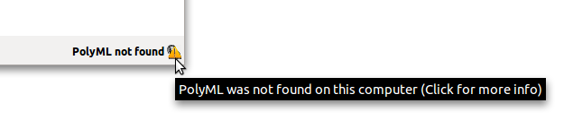

Here are a few things you could take a look at to try and identify some of the problems.
If PolyML is not installed or found on the machine, you will see this.
Click on the icon to go to settings of the extension and configure the path to your PolyML installation.
PolyMLext extension uses Firefox'es JavaScript Error Console, that can be opened by Tools > Error Console or by Ctrl-Shift-J. Note, that errors from all Firefox extensions or even websites are printed here, so not all of it may be reported by PolyMLext. Only JavaScript components of the extension will report errors here.
You'll find the "Rebuild Heaps" button in the settings page, in case that is your problem. For example, this could be needed if you updated the version of PolyML on your machine.